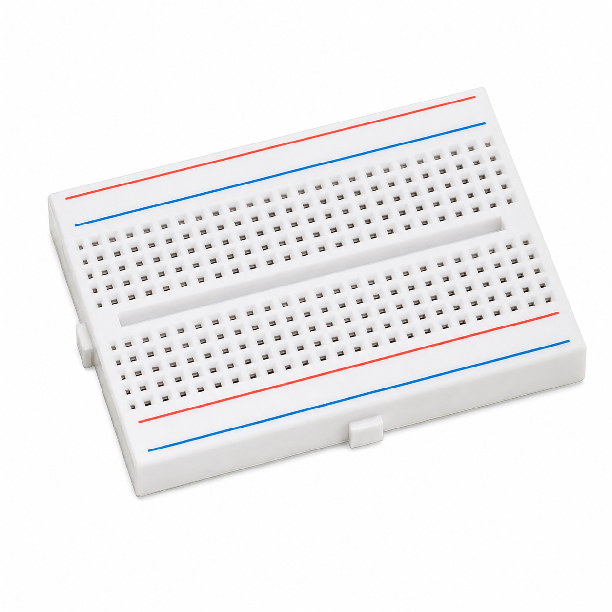

Push_Button_Based_Ultrasonic_Object_Detection_and_Alarm_System.ino

Push Button-Based Ultrasonic Object Detection and Alarm System

To develop a push button-activated ultrasonic object detection and alarm system using Arduino UNO, an HC-SR04 ultrasonic sensor, a red LED and a buzzer.
The system measures distance when the push button is pressed and activates an audible alarm for five seconds if a valid detected object is at a distance of 20 cm or less.
The Push Button-Based Ultrasonic Object Detection and Alarm System demonstrates how digital input, ultrasonic sensing and alarm outputs work together in an Arduino-controlled experiment.
A push button connected to Arduino D2 acts as the activation control. The program uses INPUT_PULLUP, so pressing the button produces a LOW signal.
Once a valid button press is detected, Arduino switches ON the red LED connected to D8 and activates the HC-SR04 ultrasonic sensor.
The ultrasonic module emits a short burst of ultrasonic sound and measures the time taken for the returning echo to be detected.
Arduino converts the echo pulse duration into an approximate distance measured in centimeters.
If the calculated distance is greater than zero and no more than 20 cm, the buzzer connected to D9 turns ON for five seconds.
If the measured object is farther than 20 cm, or if no valid echo is received, the buzzer remains OFF.
The measured distance is printed on the Serial Monitor at 9600 baud.
After the measurement, the program waits for the push button to be released before it accepts another measurement command.
This experiment does not perform continuous ultrasonic monitoring. It takes one measurement for each accepted button press.
If the buzzer is activated, the five-second delay temporarily blocks further processing.
The LED indicates that the measurement operation has been activated; it is not itself a dedicated alarm indicator.

Processes button input, measures echo duration and controls the LED and buzzer.

Measures the approximate distance to an object using ultrasonic pulses.

Starts a distance measurement when pressed and held.

Indicates an active measurement operation.

Limits the current flowing through the red LED.

Provides an audible alarm when a valid object distance is within the threshold.

Used to assemble and organize the experiment wiring.

Connect the sensor, button and outputs to Arduino UNO.
No external Arduino libraries are required.
The program uses built-in functions including pinMode(), digitalRead(), digitalWrite(), delayMicroseconds(), pulseIn() and delay().
Use a buzzer compatible with the HIGH/LOW output control in the sketch, such as a suitable active buzzer module.
| Button Terminal | Arduino Connection | Purpose |
|---|---|---|
| Terminal 1 | D2 | Digital button input |
| Terminal 2 | GND | Ground connection |
| HC-SR04 Terminal | Arduino Connection | Purpose |
|---|---|---|
| VCC | 5V | Sensor power |
| TRIG | D3 | Ultrasonic trigger output |
| ECHO | D4 | Echo pulse input |
| GND | GND | Common ground |
| LED Terminal | Arduino Connection |
|---|---|
| Anode (+) | D8 through 220Ω resistor |
| Cathode (−) | GND |
| Buzzer Terminal | Arduino Connection |
|---|---|
| Positive (+) | D9, if rated for direct drive |
| Negative (−) | GND |
Push Button: Because INPUT_PULLUP is enabled, no external pull-up resistor is required. Ensure a four-leg tactile switch is connected across its actual switched contacts.
Buzzer: Check its current requirements before connecting it directly to D9. Use a compatible driver if necessary.

Arduino normally reads the button input as HIGH because it uses INPUT_PULLUP.
Pressing the button connects D2 to GND and produces a LOW state.
After detecting LOW, Arduino waits 30 ms and checks again to confirm the press.
The HC-SR04 sensor is activated by a 10-microsecond HIGH trigger pulse.
Arduino then measures the echo pulse duration using pulseIn().
The source sketch sets an echo timeout of 30,000 microseconds.
If no echo pulse is detected before the timeout, the function returns -1 to indicate an invalid measurement.
Distance (cm) = Echo Duration (µs) × 0.0343 ÷ 2
0.0343 cm/µs is the approximate speed of sound used by the sketch.
Division by 2 accounts for the outgoing and returning travel of the ultrasonic sound.
The program compares the calculated distance against 20 cm.
The alarm condition requires both a positive valid distance and a distance at or below the threshold.
distance > 0 AND distance <= 20 cm
If true, the buzzer remains ON for 5000 milliseconds.
After sensing and any five-second alarm, Arduino waits until the button is released.
This means holding the button does not repeatedly trigger new measurements.
The red LED turns ON when measurement starts. It remains ON during the measurement and any buzzer delay.
The sketch then waits for button release. At the beginning of the next loop iteration, both LED and buzzer outputs are switched OFF.
Arduino Experiment · Code Review
Push Button-Based Ultrasonic Object Detection and Alarm System · Select a step to highlight and understand the complete Arduino sketch.
Choose a step to highlight the matching section of code on the left.
The HC-SR04 sends an ultrasonic pulse and waits for the echo reflected from an object.
The time taken for the sound to travel outward and return is used to estimate the object's distance.
INPUT_PULLUP enables Arduino's internal pull-up resistor.
An unpressed button normally reads HIGH, while a pressed button reads LOW.
pulseIn() measures how long an input pin stays in the selected state.
This sketch uses pulseIn(echoPin, HIGH, 30000UL) with a 30 ms timeout.
If no pulse is detected within the timeout, the measurement function returns -1.
The variable buzzerDuration stores 5000 milliseconds.
When a valid object distance is 20 cm or less, the buzzer stays ON for that period.
Arduino uses delay() during this interval, so it cannot take another measurement until the delay ends.
Try it: First measure an object at 30 cm, then at 15 cm. Compare the Serial Monitor values and observe when the buzzer activates.
When the system starts, the LED and buzzer remain OFF until a valid button press is detected.
Pressing the button turns ON the LED and starts one ultrasonic measurement.
The distance is displayed in the Serial Monitor.
| Condition | LED | Buzzer |
|---|---|---|
| Button not pressed | OFF | OFF |
| Valid measurement above 20 cm | ON during operation | OFF |
| Valid measurement at or below 20 cm | ON during operation | ON for 5 seconds |
| No valid echo | ON during operation | OFF |
| Button released and next loop begins | OFF | OFF |
Distance (cm): 30.05 Distance (cm): 18.01 Distance (cm): 12.48 Distance (cm): -1.00
These values are illustrative examples. Actual measurements depend on object distance, orientation and environmental conditions.
Measured distance: Approximately 30 cm.
Red LED: ON during the measurement.
Buzzer: OFF.
Measured distance: Approximately 15 cm.
Red LED: ON.
Buzzer: ON for five seconds.
If the sensor receives no valid echo within the programmed timeout, the function returns -1.
The buzzer does not activate because the distance must be greater than zero.
The original sketch does not print a separate warning message such as "Object Detected".
It prints only "Distance (cm): " followed by the measured value.
The audible alarm is the programmed indication that a valid distance meets the threshold.
The Push Button-Based Ultrasonic Object Detection and Alarm System demonstrates how Arduino UNO can measure object distance using an HC-SR04 sensor when a push button is activated.
The measured distance is compared with a programmed threshold of 20 cm.
A valid distance at or below the threshold activates the buzzer for five seconds.
The experiment demonstrates button-controlled sensing, ultrasonic measurement, conditional alarm logic and Serial Monitor output.